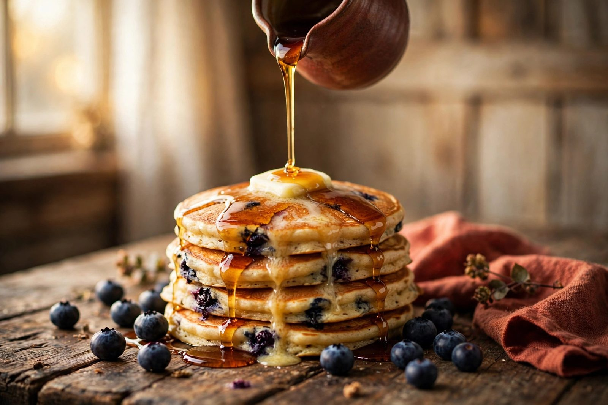
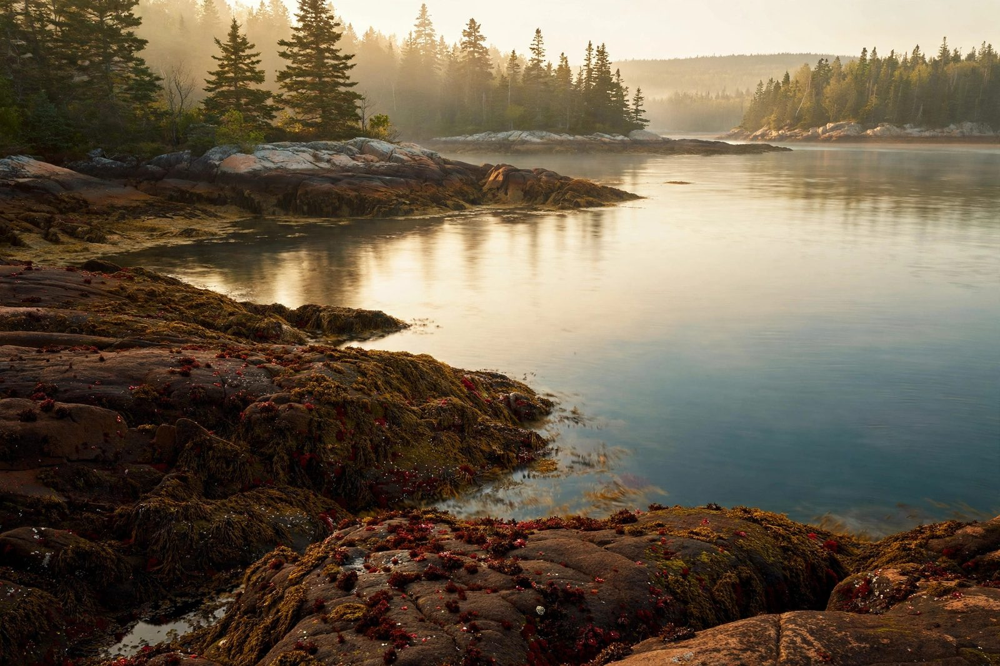

Edmunds Township · Maine · US Route 1
Real breakfast.
Right on Route 1.
Sue's Cobscook Bay Cafe serves breakfast and lunch on US-1 in Edmunds Township — minutes from Cobscook Bay State Park. Pull in, sit down, eat well.

What's cooking
The board flips with the time of day. Dishes & prices are samples.
Checking hours…
Blueberry pancakes, this morning. Full sample menu →
Why pull over
Three good reasons,
one exit.
On the park road
Minutes from Cobscook Bay State Park — the easy stop before the trails, or the reward after.
Two meals, done right
Breakfast through the morning, lunch into the afternoon. The menu here is a sample — the real one gets set with Sue.
Pull in & sit down
Roadside on US-1 with room to park the truck, the camper, or the whole family. No fuss, no wait-list theater.

The day-trip angle
Eat first. Hike second.
Some of the highest tides in the world are a few minutes down the road. Breakfast at Sue's, trails at the park — that's the day.
Plan your visitFind us
The short version
2730 US-1, Edmunds Township, ME 04628
Sample hours
Hours are samples — call ahead to confirm.